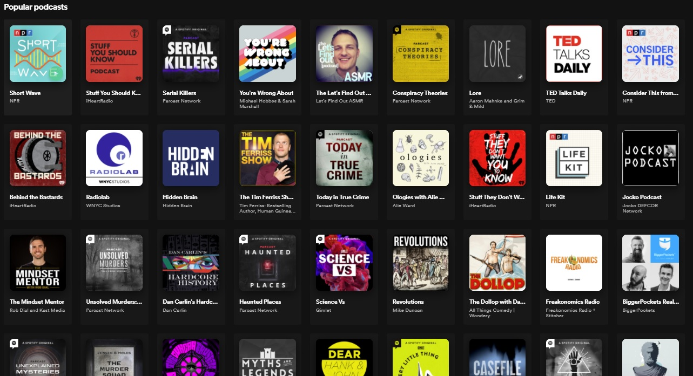

Iron, Silver, and Salt

As of the time of writing, there are over 900,000 podcasts available for listeners around the world. One way podcasts have distinguished themselves from the competition is by giving listeners a webpage to visit. Iron, Silver, and Salt is one such podcast that needed a home, and I was excited to design one for them.
Check out the final prototypeThe Problem
Iron, Silver, and Salt is a monster hunting podcast that wants to expand their listener base. One way the hosts were looking to do so was by creating a website to direct listeners to. They weren’t sure what they wanted to include on their site however, and tasked me with not only designing their site, but also determining what content should appear on it.
Discovery
To learn more about what Iron, Siver, and Salt's website needed, I needed to learn more about their audience. By conducting surveys, SWOT analyses, and card sorting exercises, I gathered the information necessary to create an informed design.
Competitive analysis

- Information about the podcast is not the highest priority of the site.
- Site does not offer a way to search episodes.
- The most eye-catching feature is a link to a different podcast.

- Finding specific information on the ‘About’ page is confusing.
- Navigation links are not consistant throughout the site.
- It takes a long time to find a specific episoide.

- Episodes are not available on-site.
- It is difficult to find where episodes are available.
- There are no other projects mentioned to expand appeal.
User Surveyes


Information Architecture
Data in hand, I crafted user personas and user stories to turn the raw data into actionable items. These in turn became user flows to further define what pages I would need to create and how they would need to interact. Finally, I began laying out where each element of the site would go throughout several wireframes.
Visual Design
Branding
While working on the wireframes, I also worked with Iron, Silver, and Salt to create a style guide to flesh out their young brand. They provided me with a logo they had already had made, and a font that came with it.

From that, I selected a complimentary font to accompany their brand font, determined an appropriate color palette, and fleshed out a style guide for them.
Full style guide
HiFi Mockups
Once everybody was happy with the wireframes and style guide, I combined the two into a hi-fi mockup. As I worked on each screen, I reached out to the hosts and senior designers for feedback, tweaking each design so that the final result would leave each stakeholder pleased.

User testing
The last step was to test the final prototype with potential users. Each testee was asked to do four tasks:
- Find more information about werewolves.
- Find and listen to the werewolf episode.
- Find more information about the hosts.
- Find where else the podcast is available.
After reviewing the results, a few key issues with the design became apparent.


Problem: Users had trouble finding the social media links.
Solution: Move links from below the main content up into the hero.


Problem: Users were having trouble finding specific monsters using the map.
Solution: Add a search bar to the map to give users another way to find specific monsters.


Problem: Users weren't sure what the search bar was for.
Solution: Remove the search bar from the hero, and move it into the episode listing with pre-populated text clarifying its usage.
Conclusion
Iron, Silver, and Salt was a very fun site to design. This opportunity taught me a lot about balancing the needs of a client with the needs of your superiors, while still keeping the focus of the designs on the users. Getting and incorporating feedback is always an important process of creating something new, but growing the ability to balance feedback from different stakeholders is an essential piece of that.
Moving forward, as the podcast grows, I would like to add pages to the site- a merch store if they create some, or pages dedicated to any books or videos they create. Creating additional monster info cards, and episode pages would be a good addition as well, if there were more time.